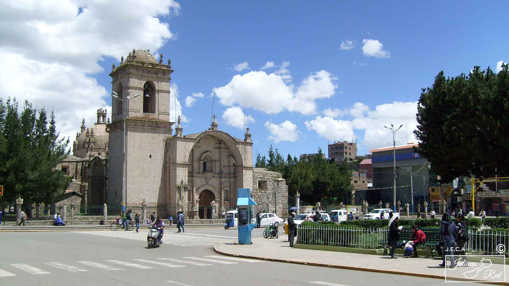
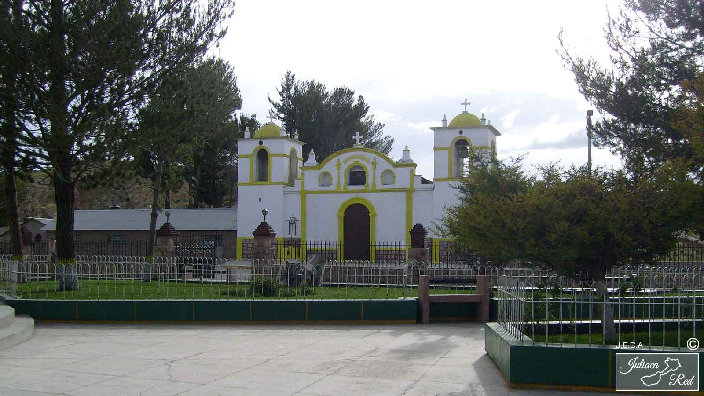
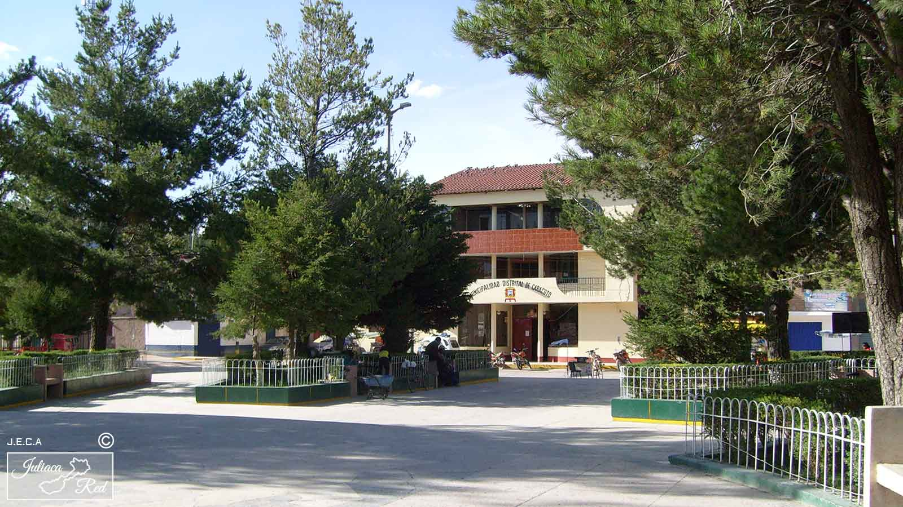

GALERÍA

JULIACA

Vista Panorámica
X
VISTA PANORAMICA DE JULIACA Año : 2017
Fuente : Juliacared
Comentarios : Zona noroeste de la ciudad de los vientos.

Año : 2015
Fuente : juliacared
Comentarios : fundada en el año 1774, tomó más de 100 años cocluirla, está contruida en base a sillar y piedras.
Igl. Santa Catalina
X
IGLESIA SANTA CATALINA Año : 2015
Fuente : juliacared
Comentarios : fundada en el año 1774, tomó más de 100 años cocluirla, está contruida en base a sillar y piedras.

Igl. Santa Catalina
X
IGLESIA SANTA CATALINA (LADO SUR) Año : 2015
Fuente : juliacared
Comentarios : Hoy la iglesia tiene 245 años y es la 2da construcción más antigua de la provincia.

Igl. La Merced
X
IGLESIA LA MERCED Año : 2015
Fuente : juliacared
Comentarios : Fundada en año 1959, ubicada a un costado de la plaza bolognesi.
Plaza Bolognesi
X
GALERIA DE LAS CALCETERAS Año : 2018
Fuente : juliacared
Comentarios : Ubicada a un costado de la plaza Bolognesi.
Estación central
X
ESTACIÓN CENTRAL Año : 2016
Fuente : juliacared
Comentarios : Ubicada a un costado de la plaza Bolognesi.

Cuartel Bolognesi
X
CUARTEL BOLOGNESI Año : 2009
Fuente : juliacared
Comentarios : Ubicacado en la plaza zarumilla e inaugurado en el año 1939.
Plaza Zarumilla
X
PLAZA ZARUMILLA Año : 2016
Fuente : juliacared
Comentarios : Aunque es conocida como plaza Zarumilla, su nombre oficial es plaza dos de mayo.
Colegio Santa Elena
X
COLEGIO ELENA DE SANTA MARIA Año : 2016
Fuente : juliacared
Comentarios : construido alrededor de los años 1945 y 1953.

Cristo Blanco
X
CRISTO BLANCO Año : 2017
Fuente : juliacared
Comentarios : Monumento inaugurado en el año 1987.

Mirador
X
MIRADOR DEL CERRO SANTA CRUZ Año : 2009
Fuente : juliacared
Comentarios : Obra inaugurada en el año 2009 (Prof. David Mamani).

Mirador
X
MIRADOR CERRO SANTA CRUZ Año : 2009
Fuente : juliacared
Comentarios :Obra inaugurada en el año 2009 (Prof. David Mamani)

Univ. de Juliaca
X
UNIVERSIDAD NACIONAL DE JULIACA Año : 2018
Fuente : juliacared
Comentarios : Creada en el año 2007 en el gobierno de Alan Garcia.
Univ. de Juliaca
X
UNIVERSIDAD NACIONAL DE JULIACA Año : 2013
Fuente : juliacared
Comentarios : Primer pabellón de dicha universidad que se construyó entre los años 2009 y 2010.
Coliseo cerrado
X
COLISEO CERRADO Año : 2008
Fuente : juliacared
Comentarios : Remodelado en el año 2008 en la gestión del Prof. David Mamani.
Parque La Capilla
X
COMPLEJO RECREACIONAL LA CAPILLA Año : 2015
Fuente : juliacared
Comentarios : El complejo fue construido en la gestión del Prof. Ricardo Castillo (2000) y remodelado a lo largo de la gestión del Prof. David Mamani.
Piscina Municipal
X
PISCINA MUNICIPAL Año : 2008
Fuente : juliacared
Comentarios : Obra construida en la Gestión del prof. David Mamani (2008).
Chimpa Jaran
X
CHIMPA JARAN Año : 2019
Fuente : juliacared
Comentarios : Humedal ubicado en la parte norte de la ciudad de Juliaca en las cercanias del Río Maravillas.

Laguna de Chacas
X
LAGUNA DE CHACAS Año : 2019
Fuente : juliacared
Comentarios : Conocida también como Kokan, esta se ubica a 10 km al noroeste de la ciudad de Juliaca.
Parque del músico
X
PARQUE SANTA CECILIA Año : 2019
Fuente : juliacared
Comentarios : Obra construida en el año 2009.
Parque Pulmoncito
X
PULMONCITO CALCETERO Año : 2013
Fuente : juliacared
Comentarios : Parque ubicado en la zona de La Capilla.
Parque Rinconada
X
PARQUE Año : 2019
Fuente : juliacared
Comentarios : Ubicado en la zona de La Rinconada.
Jr. Mariano Nuñez
X
CASONA DE LA PLAZA BOLOGNESI Año : 2016
Fuente : juliacared
Comentarios : conocido también como "El Gran Hotel".
CABANA

Igl. San Cristobal
X
IGLESIA SAN CRISTOBAL Año : 2015
Fuente : juliacared
Comentarios : construcción más antigua de la provincia de San Román, edificada en la época colonial en el año 1677.
Plaza de Armas
X
PLAZA DE ARMAS - CABANA Año : 2015
Fuente : juliacared
Comentarios : Monumento central en honor al Cororonel Francisco Bolognesi.
CABANILLAS
Municipalidad
X
MUNICIPALIDAD DISTRITAL DE CABANILLAS Año : 2016
Fuente : juliacared
Comentarios : ...

Av. Deustua
X
AVENIDA DEUSTUA Año : 2014
Fuente : juliacared
Comentarios : El aspecto de este lugar ha cambiado muy poco durante más de 100 años.


Chullpa - Huataquita
X
CHULLPA DEL INCA PACCARITA Año : 2008
Fuente : juliacared
Comentarios : Aún existen algunas de estas chullpas en pie, ubicadas en la comunidad de Huataquita, datan de la época pre inca e inca.

Laguna Saracocha
X
LAGUNA SARACOCHA Año : 2016
Fuente : juliacared
Comentarios : Ubicada a unos 4100 m s.n.m. Es la laguna más grande de la provincia de San Román (aprox. 13 km²).
CARACOTO

Año : 2013
Fuente : juliacared
Comentarios : Reconstruida en el año 1854.
Igl. San Felipe
X
IGLESIA SAN FELIPE Año : 2013
Fuente : juliacared
Comentarios : Reconstruida en el año 1854.


Año : 2017
Fuente : juliacared
Comentarios : ...
Municipalidad
X
MUNICIPALIDAD DISTRITAL DE CARACOTO Año : 2017
Fuente : juliacared
Comentarios : ...

Mto. San Martin
X
MONUMETO EN HONOR A DON JOSÉ DE SAN MARTIN Año : 2013
Fuente : juliacared
Comentarios : ...